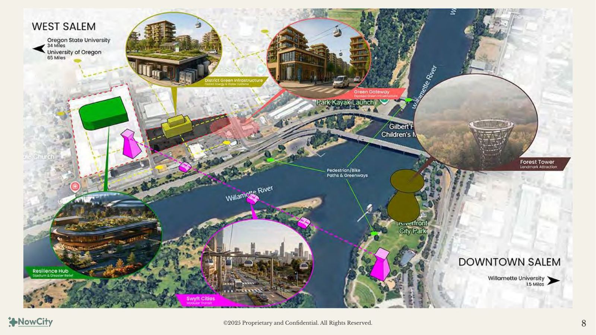
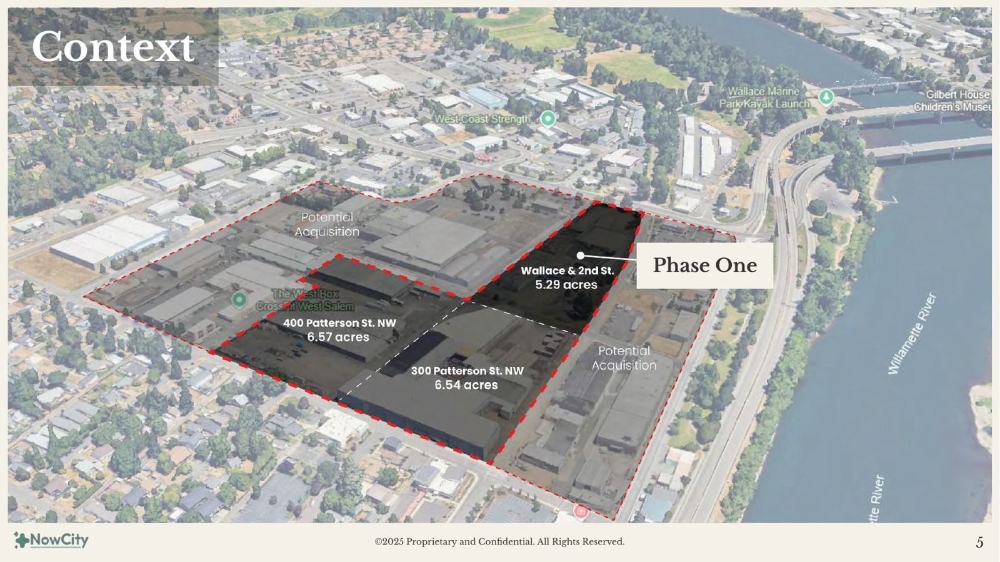
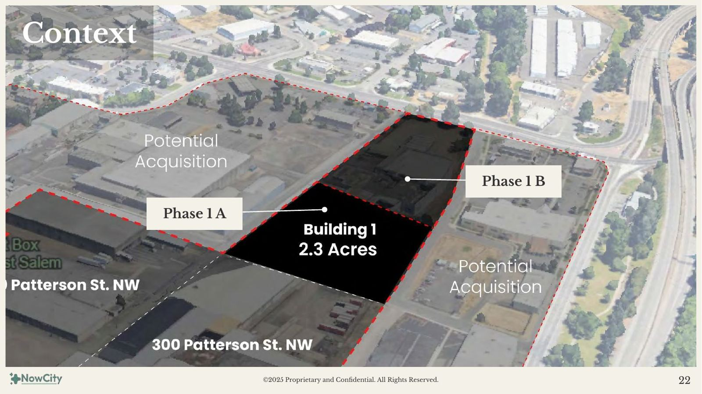
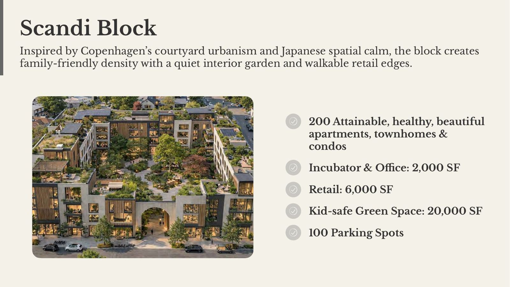
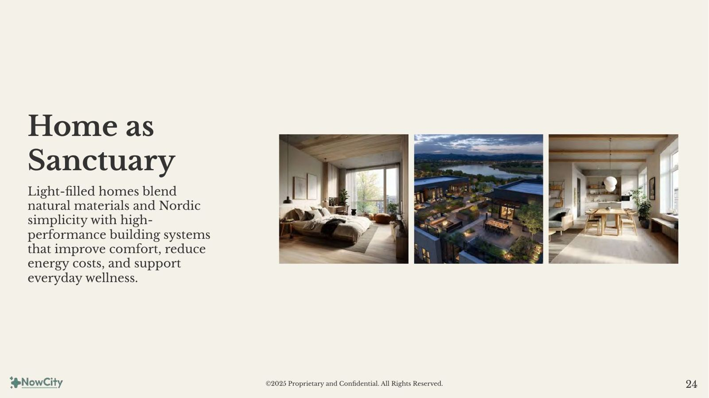
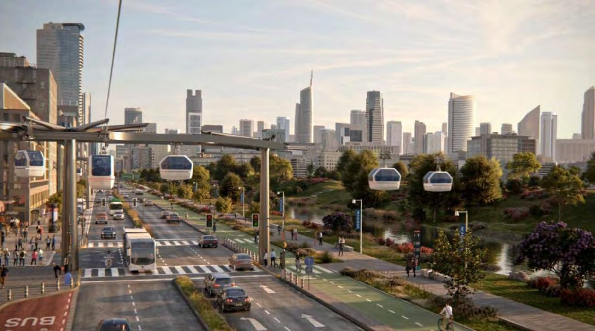
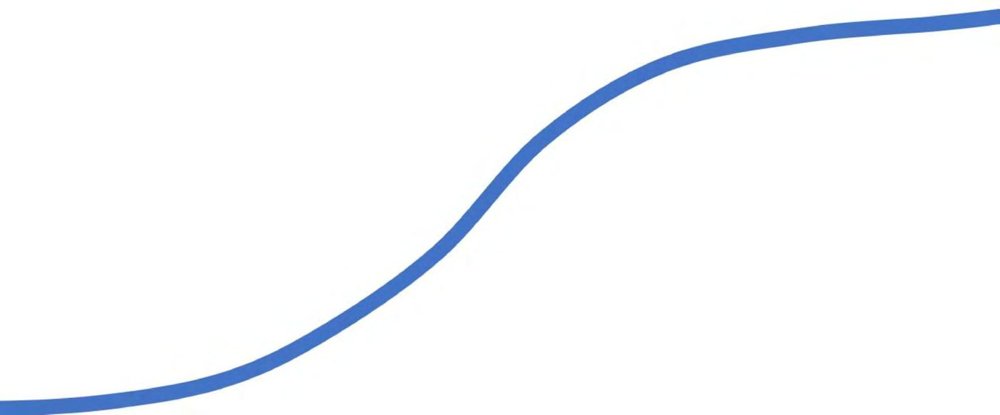

Now City
West Salem
Confidential Investment Summary
A rare window where land use, policy, and market momentum align
In Salem, Oregon, the under-appreciated and growing capital, Now City is catalyzing the transformation of an aging light-industrial corridor into a high-density, mixed-use innovation and entertainment district. The City has already rezoned the area to support this shift, creating a rare window where land use, policy, and market momentum are aligned.
Now City's strategy begins with an incrementally phased 5.29-acre mixed-use development (Phase One) and scales across the ~22-acre district assemblage, activate regional mobility and landmark attractions, and deploy a new generation of regenerative urban infrastructure across the district.
Regionally, the project is strategically aligned with Oregon's expanding Silicon Forest innovation economy, including Oregon State University in nearby Corvallis, home to the Jen-Hsun Huang and Lori Mills Huang Collaborative Innovation Complex for AI, robotics, semiconductors, climate science, and ag-tech.
The district at completion
District Baseline Financials
~22-acre district — District Model V1 (June 2026), base case
The entry point: capitalizing Phase 1 pre-development
Raising: $4 Million 50% committed
Pre-development capital — uses for the next 18–24 months:
- $2,000,000 — Land acquisition / contribution
- $1,200,000 — Entitlement & permitting cost (to shovel ready)
- $150,000 — Contingencies
- $400,000 — Developer fees
- $250,000 — Operating cost (legal, fundraising, etc.)
Co-GP Financial Overview
$3.6M invested through Phase 1; simplified waterfall, District Model V1
- High-impact OZ + URA incentives — any gains from tax credits flow straight to investors as additional upside beyond the modeled promote
- Low basis, high design quality
Opportunity Zone Position
The district parcels sit within the City of Salem's designated West Salem Opportunity Zone — one of four OZs in the city (City of Salem). Under the One Big Beautiful Bill Act, Opportunity Zones are now a permanent program, with updated designations taking effect January 1, 2027 (IRS). The project entity structure is QOF/QOZB-compatible: OZ-eligible investors can pursue the 10-year basis step-up through Exit Window D, while the underwriting stands on its own without OZ benefits. We are in active conversations with OZ fund investors.
Multiple capital pathways — OZ-eligible equity, strategic equity, bridge + equity, HUD financing, and a hybrid stack — are detailed in the Business Plan capital formation strategy.
The District Scale Vision
Now City West Salem is a next-generation urban district designed for everyday vitality, prosperity, and long-term resilience — integrating housing, work, play, food, wellness, and mobility into a connected daily experience.


District phasing
Per the Phased Development Business Plan — each phase is sequenced as absorption and revenue justify expansion.
Phase 1 · 5.29 AC
Innovation District + Residential Catalyst
Mark May Parcel · 740 Bassett St NW
Phase 2 · 6.50 AC
Courtyard Residential Neighborhood
300 Patterson St NW
Phase 3 · 6.50 AC
Sports & Entertainment District
400 Patterson St NW
Phase 4 · 3.9 AC
Riverview Penthouses & Multifamily
809 Edgewater St NW
Phase 0 (site control, due diligence & capital formation) and Phase 0B (West Salem Works interim activation) precede and de-risk vertical development — see the Business Plan.
Phase 1 — 740 Bassett: The First Block
Designed around Scandinavian courtyard urbanism and Japanese garden philosophy. Inspired by Copenhagen's courtyard urbanism and Japanese spatial calm, the block creates family-friendly density with a quiet interior garden and walkable retail edges.



Phase 1 Sources & Uses
Source: Pro Forma 740 Bassett, June 11 2026 (Green Infrastructure case)
| Uses | Amount |
|---|---|
| Land (acquisition & development) | $10.9M |
| Hard costs | $108.0M |
| Soft costs | $16.1M |
| Other costs | $1.1M |
| Financing costs | $13.4M |
| Total | $149.4M |
| Sources | Amount |
|---|---|
| Construction loan (~65% LTC, 7%) | $99.6M |
| Grants / SDC credits | $1.0M |
| Equity — GP pre-development | $8.3M |
| Equity — contribution in kind | $3.8M |
| Equity — cash | $36.7M |
| Total | $149.4M |
Phase 1 Baseline Returns
Pro Forma 740 Bassett, June 11 2026 — levered, Green Infrastructure case
Green infrastructure delivery adds ~$14.2M of profit vs. the traditional-infrastructure case in the same model. Unit mix and full schedules live in the pro forma; district extrapolation in District Model V1.
Phase One — the disciplined entry point
Phase 1 is structured as a disciplined, revenue-generating entry point that validates demand, underwriting, and execution ahead of district-scale expansion.
- Phase 1: 5.29 AC mixed use — 380 multifamily units + amenities (phased construction)
- 40,000 SF of commercial (experiential retail + F&B + tech innovation flex office)
- Immediate regional draw: serving Keizer, Albany, Corvallis, south Portland suburbs
- Opportunity Zone + Urban Renewal Area for stacked tax advantages
Why Salem, why now
Nature, access, and undervalued quality of life. Salem sits at the heart of the Willamette River Valley, one of the most livable and productive regions in the U.S. — rare proximity to world-class nature, a growing innovation economy, and a lower-cost, under-recognized lifestyle advantage.
The Next Silicon Story: Why Salem Is Poised
State capitals like Austin saw rents nearly double in 10 years; Denver grew 32% in 5 years. With property values more than doubled in those markets, Salem is next.
Salem, OR · Silicon Forest
- Population (2025): 180K
- 2025 rent: $1,600/month
- Cycle position: ground floor, high upside potential
- Tech: Nvidia, Intel, Oregon State University
Denver, CO
- Population (2010 → 2020): 600K → 715K
- 2015–2025 rent increase: $1,184 → $1,672/month (+41%)
- Cycle position: middle, more potential upside
- Tech: Arrow, Palantir HQ, big tech offices
Austin, TX · Silicon Hills
- City population (2010 → 2020): 790K → ~979K
- 2015–2025 rent increase: $1,200 → $2,500/month (+92%)
- Cycle position: mature
- Tech: Tesla, Oracle, UT-Austin, big tech offices
Why Salem
- 45 minutes to Portland (international airport, talent, culture)
- 60 minutes to the Oregon Coast
- Surrounded by vineyards, farms, rivers, and forests
- Four-season outdoor living (hiking, cycling, water, wine, mountains)
- Strong in-migration from California and the Pacific Northwest
- Undervalued relative to quality of life and long-term upside
City of Salem Alignment
- Expands Salem's long-term tax base while preserving near-term employment and enabling gradual land use transition
- Delivers new housing supply calibrated to local incomes, workforce needs, and demographic demand
- Activates the Willamette Riverfront and strengthens west–east connectivity through targeted infrastructure sequencing
- Reduces long-term infrastructure strain by prioritizing walkability, proximity, and daily services
- Phases density, traffic, and investment in alignment with absorption and performance thresholds
- Positions Salem to capture regional growth while maintaining local control and fiscal discipline
Oregon State Alignment
- A coordinated urban development initiative that strengthens housing supply, job creation, and long-term tax base growth at once
- A phased, infrastructure-aligned approach supporting housing delivery, workforce stability, and private investment confidence
- Designed to align with statewide housing production goals, economic development priorities, and talent retention strategies
- Advances efficient use of Opportunity Zone and urban renewal tools without expanding public balance-sheet risk
- Supports construction, small business formation, and innovation-sector employment across the Willamette Valley
- A replicable district framework for mid-sized Oregon cities seeking durable, market-driven growth
The Location — Proximity To…
- 45-minute commute to the Huang Collaborative Innovation Complex (NVIDIA) for AI research at Oregon State University
- Interstate 5, major thoroughfares, bridges, parks, museums, bike trails, and public transit
- Retailers such as Costco, Roth's Fresh Market, Walmart Supercenter, and Home Depot, among others
- State Capitol — nearing completion of a $600M capital improvement project
- Willamette University and Western Oregon University
- Salem Hospital — one of the busiest ERs on the West Coast, 650 beds, with a recently completed 150-bed patient tower
Housing Demand — The Core Stability Layer
- Multifamily housing in Salem is significantly undersupplied (avg 6% multifamily vacancy rate)
- 54% of households within 1.5 miles are renters (above city average)
- Renters spend 36–37% of income on housing, creating a captive tenant pool
- Median income projected to rise from $58,860 (2024) to $67,159 (2030)
- Supports $1,600–$2,500 rents with 15% of units reserved for workforce housing (80–120% AMI)
- Multifamily program provides durable cash flow, strong absorption, and OZ tax advantages
Market & Economic Drivers
- Strong demographics — City of Salem ~180,000 | MSA 441,000; 50.3% of downtown residents college educated; 48% aged 25–59 (prime renters); 32% of households earn $75K–$150K annually
- Undersupplied rental market — limited new deliveries near the CBD; strong demand, rising rents, low vacancy; few active comps in the pipeline = first-mover advantage
- Housing stability & retail demand — 54% renter households; <6% vacancy; $275M+ retail leakage within 1.5 miles; curated F&B focus avoids oversupply
- Implications — stable government + healthcare employment; predictable daytime population to backfill retail and F&B tenants; #1 ag county + food processors with authentic branding around Salem's food heritage; growing visitor economy supporting boutique hospitality; logistics + robotics innovation fueling demand for market-rate apartments
Latent Opportunity
- Critical undersupply — <2% vacancy in the core market → severe pricing power; 636 units of unmet demand = immediate absorption; thin pipeline means premium exit multiples for first movers
- Retail & lifestyle compatibility — $60K+ average disposable income; opportunity to capture $7M in unmet F&B demand; strong fit for incubator retail, restaurant adaptive reuse, and curated ground-floor activation
Strategic Advantage: Location, Workforce & Demographics
The district sits at the nexus of Salem's growth corridor.
Mobility
Wallace Road carries 30,000+ daily trips, linking directly to downtown Salem.
Employment Base
Within 3 miles, 5,300 businesses employ over 63,000 workers, providing both renter households and daytime audiences for retail and events.
Daytime Population
Over 51,000 people within 1.5 miles — a vital base for local vibrance, events and retail activity.
Thesis
As OSU graduates hundreds of AI, robotics, and materials science professionals into Oregon's economy starting in 2026, Now City West Salem will be ready with housing, flex office & lab space, and cultural amenities designed to capture and retain this talent — ensuring Salem becomes not only Oregon's capital, but also a magnet for its innovation economy.
Why Here?
- Undersupplied housing, retail leakage, rising incomes
- Prime location: I-5, Willamette River, Opportunity Zone + Urban Renewal Area
- Stable government employment base anchors demand
Why Now?
- Pro-development city; by-right development & upzoning of West Salem riverfront
- Portland headwinds = Salem's opportunity
- OSU's Huang Innovation Complex (Nvidia founder) & local robotics growth
- Technology-driven job growth
Why Us?
- Local expertise + strong city relationships
- Team has entitled thousands of units & structured billions in capital
- Passion for resilient healthy placemaking, economic development, and long-term value creation
Baseline financials, sources & uses, and sensitivity
Underwriting reflects a conservative base case. Pre-development value-add strategies are activated to improve returns for GPs and LPs beyond the modeled base.
Phase 1 Baseline
5.29 acres at 740 Bassett St NW — Pro Forma, June 11 2026
District Baseline
~22 acres, 1,000 units — District Model V1, base case
Exit Optionality — Returns by Window
Rolling stabilization creates recurring liquidity windows. District Model V1, simplified annual basis; figures move with assumptions.
| Window | Timing | What sells | Equity Multiple | Approx. IRR |
|---|---|---|---|---|
| A — Phase 1 recapitalization | ~Year 4 | Phase 1 sale or refinance | 1.7x | ~15% |
| B — Residential portfolio | ~Year 6 | Phases 1–2 stabilized residential | 2.3x | ~15% |
| C — District completion | ~Year 8 | Full district or components | 2.6x | ~13% |
| D — Extended / OZ hold | Year 10+ | Optional 10-yr OZ basis step-up | 3.5x | ~13% |
Geometric IRR on a simplified annual model — conservative versus the monthly pro forma (Phase 1 standalone underwrites to 20.3% levered IRR). Co-GP returns under the simplified waterfall: ~2.3x at Window A rising to ~6.0x at Window D.
Operating Expenses increment 5.00%
| OpEx | Diff | Delta | Project IRR | Avg LP CoC | LP IRR | LP Multiple | LP Profit | GP Profit |
|---|---|---|---|---|---|---|---|---|
| $4,633,390 | $421,217 | +10% | 28% | 8% | 30.4% | 2.0x | $18,462,782 | $8,666,165 |
| $4,422,782 | $210,609 | +5% | 29% | 8% | 31.9% | 2.0x | $19,488,492 | $9,257,040 |
| $4,212,173 | $0 | 0% | 30.4% | 8% | 33.5% | 2.1x | $20,514,202 | $9,847,915 |
| $4,001,564 | -$210,609 | -5.00% | 31.62% | 8.20% | 35.0% | 2.1x | $21,539,912 | $10,438,790 |
| $3,790,956 | -$421,217 | -10.00% | 32.83% | 8.50% | 36.5% | 2.2x | $22,565,622 | $11,029,665 |
Rents on Operated Units increment 2.50%
| Rents | Diff | Delta | Project IRR | Avg LP CoC | LP IRR | LP Multiple | LP Profit | GP Profit |
|---|---|---|---|---|---|---|---|---|
| $5,364,219 | -$282,327 | -5% | 28% | 8% | 30.4% | 2.0x | $18,462,782 | $8,764,644 |
| $5,505,382 | -$141,164 | -2% | 29% | 8% | 31.9% | 2.0x | $19,488,492 | $9,306,280 |
| $5,646,546 | $0 | 0% | 30.4% | 8% | 33.5% | 2.1x | $20,514,202 | $9,847,915 |
| $5,787,710 | $141,164 | +2.50% | 31.54% | 8.20% | 35.0% | 2.2x | $21,539,912 | $10,389,550 |
| $5,928,873 | $282,327 | +5.00% | 32.68% | 8.50% | 36.5% | 2.2x | $22,565,622 | $10,931,186 |
Vacancy increment 2.50%
| Vacancy | Diff | Delta | Project IRR | Avg LP CoC | LP IRR | LP Multiple | LP Profit | GP Profit |
|---|---|---|---|---|---|---|---|---|
| 10% | n/a | +6% | 26% | 7% | 27.8% | 1.8x | $16,821,646 | $7,779,853 |
| 7.5% | n/a | +4% | 28% | 7% | 30.2% | 2.0x | $18,360,211 | $8,641,545 |
| 5% | n/a | +1% | 30.4% | 8% | 33.5% | 2.1x | $20,514,202 | $9,847,915 |
| 2.5% | n/a | -1.50% | 31.54% | 8.20% | 34.9% | 2.2x | $21,437,341 | $10,364,931 |
| 0% | n/a | -4.00% | 33.44% | 8.60% | 37.2% | 2.3x | $22,975,906 | $11,226,623 |
Interest on Construction Loan increment 0.50%
| Rate | Diff | Delta | Project IRR | Avg LP CoC | LP IRR | LP Multiple | LP Profit | GP Profit |
|---|---|---|---|---|---|---|---|---|
| 8% | +100 bps | +1% | 30% | 8% | 32.9% | 2.1x | $20,144,946 | $9,631,261 |
| 7.5% | +50 bps | +1% | 30% | 8% | 33.2% | 2.1x | $20,329,574 | $9,739,588 |
| 7% | 0 bps | 0% | 30.4% | 8% | 33.5% | 2.1x | $20,514,202 | $9,847,915 |
| 6.5% | -50 bps | -0.50% | 30.58% | 8.00% | 33.7% | 2.1x | $20,698,830 | $9,956,242 |
| 6% | -100 bps | -1.00% | 30.76% | 8.10% | 34.0% | 2.1x | $20,883,458 | $10,064,569 |
Interest on Refi Loan increment 0.50%
| Rate | Diff | Delta | Project IRR | Avg LP CoC | LP IRR | LP Multiple | LP Profit | GP Profit |
|---|---|---|---|---|---|---|---|---|
| 8% | +100 bps | +1% | 30% | 8% | 21.4% | 2.1x | $20,062,890 | $9,572,173 |
| 7.5% | +50 bps | +1% | 30% | 8% | 21.6% | 2.1x | $20,288,546 | $9,710,044 |
| 7% | 0 bps | 0% | 30.4% | 8% | 33.5% | 2.1x | $20,514,202 | $9,847,915 |
| 6.5% | -50 bps | -0.50% | 30.63% | 8.10% | 22.0% | 2.1x | $20,739,858 | $9,985,786 |
| 6% | -100 bps | -1.00% | 30.86% | 8.10% | 22.2% | 2.1x | $20,965,514 | $10,123,657 |
From site control to exit
The development plan follows the value creation sequence set out in the Phased Development Business Plan: Control Land → Create Value → Build Catalyst Phase → Expand District → Stabilize → Exit.
Phase 1 · M0–M12
- LOI execution
- Due diligence
- Master planning
- Entitlements
- Capital raise
- Financing commitments
Phase 1 · M12–M34
- Phased construction — multifamily, retail, office
Phase 1 · M24–M46
- Lease-up
- Operational stabilization & financial seasoning
- Innovation district activation
- Project sale, refinance, or roll over to full district
Designed for everyday vitality
Now City's mission is to accelerate the transition to regenerative, resilient, and equitable communities and cities.
Regeneration
Restore the natural systems that sustain daily life (clean air, water, soil, and food), improving personal health while rebuilding ecological function at the neighborhood and district scale.
Resilience
Homes, mobility, energy, food, and social systems are designed to perform under stress (climate and economic disruption), strengthening household security and community-wide stability.
Equity
Designing around the realities of caregiving, childhood, aging, mobility independence, and access to opportunity improves daily life for individuals while creating more stable, connected, and inclusive communities for all.
Regenerative Placemaking
- Built for Well-Being — biophilic streetscapes, shaded walking paths, green plazas, and active gathering spaces that support daily movement, mental health, and social connection
- Culture & Flavor — breweries, food halls, artisan retail, and year-round programming that celebrate local creativity, craft, and regional identity
- Innovation in Daily Life — maker spaces, startup studios, and flexible work environments that place entrepreneurship, research, and creation directly into the fabric of the district
- Connected Living — walkable streets, safe bike networks, and future-forward transit connections that seamlessly link the district to downtown Salem, the riverfront, and the region
Resilience by Design
Now City West Salem is designed to quietly become a resilience hub — not through emergency labeling, but through everyday civic life. By anchoring the district in shared gathering, local infrastructure, and walkable access to daily needs, resilience emerges naturally as a byproduct of good urban design.
- Indoor soccer arena & event space as a year-round community gathering and response anchor
- District-scale green infrastructure integrating power, heating and cooling, wastewater, last-mile mobility, and data infrastructure for continuous operation under stress
- High-paying innovation jobs + regenerative placemaking connecting people to nature, heritage, and long-term opportunity
Beyond Agrihoods: Food as District Infrastructure
A living innovation framework to design, test, and scale urban+rural circular food systems. By linking regenerative agriculture, food logistics, local markets, waste recovery, and community participation, the district becomes a real-world platform for proving what truly resilient food economies look like.
- Urban+rural circular food systems connecting regional regenerative farms with on-site processing, markets, and daily life
- Living testbed for agri-tech + soil + food innovation supporting founders, researchers, and farmers
- Closed-loop nutrient and organic waste recovery feeding back into regional food production
- Scalable agrihood innovation framework that can be replicated globally
Regenerative AI — A New Kind of Innovation District
At first glance, "Regenerative AI" may sound like an oxymoron. We believe it reflects the work ahead: redirecting powerful digital tools toward the healing and long-term resilience of living systems. West Salem is imagined as an innovation district made to incubate a new generation of graduates, founders, and community leaders in applying AI in ways that restore ecological health and strengthen human wellbeing — directly within the fabric of daily life.
- Improve building performance, energy efficiency, and material stewardship
- Support mobility optimization and accessibility
- Enable real-time water, waste, and resource intelligence
- Strengthen food systems, climate adaptation, and carbon awareness
- Enhance public health insights, safety, and community services
Landscape Intelligence: Designing Nature as Infrastructure
Not just parks or green decoration — treating landscape as living infrastructure: integrated ecology, climate adaptation, social systems, and public health. It means designing with nature's logic, not tacking nature onto development.
- "City-Nature" as foundational infrastructure — ecology woven into streets, plazas, and open space as a working system, not surface decoration
- Climate and water performance by design — cooling, stormwater management, and microclimate regulation handled through living landscapes
- Health, biodiversity, and public life integrated — landscapes that simultaneously support human well-being, habitat, and social connection
- Adaptive and evolving open space — flexible landscapes that change with use, seasons, and the district's long-term growth
Women-First, Family-First, and Aging-In-Place Design
Communities designed around the daily realities of women, children, and aging adults consistently outperform conventional development on health, safety, stability, and long-term value. By prioritizing care economies, mobility independence, social connection, and lifelong housing, Now City West Salem uses a women-first lens to create places that work better for everyone.
- Aging-in-place housing + services supporting independence, dignity, and reduced healthcare burden over time
- Child-centered public realm with safe mobility, nature-based play, and everyday supervision through active streets
- Women-first safety, access, and care design shown to increase walkability, retail vitality, and neighborhood stability
- Intergenerational community fabric proven to reduce isolation, improve mental health, and increase long-term residency
What Brings People In — and Keeps Them
To attract young people and the young at heart, Now City West Salem is envisioned as a place of wonder, movement, meaning, and opportunity. Landmark experiences, immersive nature-based play, seamless regional connection, and access to high-value careers come together to create a district people travel to — and choose to stay in.
- Iconic landmark experiences — a Danish Forest Tower visible from I-5 as a connected vertical climbing and strolling park supporting play, wellness, and intergenerational community life
- Swyft Cities gondola connectivity linking West Salem to downtown, Riverfront Park, and Willamette University
- High-paying innovation jobs + regenerative placemaking connecting people to nature, heritage, and long-term opportunity


Built around the work in front of us
Now City operates as a district strategy and systems integrator, supported by a growing bench of development, construction, infrastructure, and operating partners. This model allows Phase 1 and early district phases to be executed by experienced local and regional teams with direct market knowledge, while Now City maintains continuity of vision, performance standards, and long-term district control. As the platform scales, execution capacity scales with it — through joint ventures, operating partnerships, and institutional collaborators aligned with district-level outcomes.
Leadership

Erik Gillberg
Erik is a systems thinker focused on aligning capital, design, and operations into development that is financially viable, operationally sound, and grounded in care. He brings 30 years of property operations and 20 years in technology, business development, and startup leadership.

Ritchie Ju
Ritchie leads design, development, and operations. B.Architecture from Carnegie Mellon, MS in Architecture and Urban Design from Columbia, MBA candidate at Johns Hopkins. Previously a mobility planner at Lyft in New York, where he led bike-share expansion, and later supported capital raise and development of a 1,000-unit multifamily mixed-use project in NYC.
Brianna Gonzalez
Brianna is a securities and real-estate attorney and Managing Partner of Keiretsu Law. Her practice spans equity and debt securities offerings, fund formation, and innovative financing structures. Her background in public finance is a particular advantage for navigating public-private partnerships and municipal finance.
Senior Advisors
We work with senior advisors whose expertise is directly load-bearing for the work.

Michael H. Shuman
Michael is an economist, attorney, and one of the architects of the 2012 JOBS Act. Adjunct Professor at Bard Business School and author of Put Your Money Where Your Life Is, The Local Economy Solution, and others. He advises Now City on community-rooted ownership, local capital formation, and finance models that keep wealth in place.

Neal Payton
Neal, FAIA, FCNU, directs the western U.S. urban and architectural design practice at Torti Gallas. His work focuses on master plans, form-based codes, and the public realm — especially the revitalization of declining urban centers, brownfields, and aging suburbs. He advises Now City on urbanism, master planning, and entitlement strategy.
Value Add Strategies: How We Deliver More Without Spending More
AI-native development, advanced modeling, data intelligence, automation, and modern delivery methods reduce design friction, compress timelines, lower soft costs, and provide the reporting backbone institutional capital now requires.
Regenerative Placemaking
Wellness, prosperity, and ecology data-driven community design.
Industrialized Construction
Modern methods that reduce cost, shorten schedules & minimize waste.
Green Infrastructure
Integrated energy, water & mobility systems that cut OpEx & boost resilience.
Innovative Finance
Stacked incentives + carbon & brand capital to enhance returns.
Addressing investor concerns directly
Disclaimers
All projections were made based on certain assumptions regarding revenues and costs of the project, among other things, which may not equate to actual results. Although the Manager believes these assumptions to be reasonable, actual results will differ from the Manager's assumptions and related projections may differ materially. A prospective investor, together with his or her financial and legal advisers, should independently evaluate the reasonableness of any assumptions or projections and should not place undue or significant weight on any projections by the Manager or any other persons related to the Manager. This presentation does not constitute an offer to buy or sell securities. Prospective investors should not rely in whole or in part on this presentation. An offering can only be made pursuant to delivery of a private placement memorandum and receipt of investment related documentation. The offer to invest in the securities and the sale thereof has not been registered under the Securities Act, or any state securities act. The securities are being offered and sold in reliance on exemptions from the registration requirements of such acts. These securities are being offered and sold only to bona fide residents of the states in which such exemption is available, who can meet certain requirements, including net worth and income requirements, and who purchase the securities without a view to distribution or resale.
All statements contained herein may constitute "forward-looking statements." Forward-looking statements are generally identifiable by the use of the words "may," "should," "plan," "expect," "anticipate," "estimate," "believe," "intend," "project," "goal," or "target" or the negative of these words or other variations of these words or comparable terminology. Forward-looking statements are based on current expectations and involve a number of known and unknown risks, uncertainties and other factors, many of which are beyond the Manager's control, that could cause the project's or its actual results, levels of activity, performance or achievements to be materially different from any future results, levels of activity, performance or achievements expressed or implied by such forward-looking statements. No representation is made or assurance given that such statements or views are correct or that the objectives of the Manager will be achieved. You should not place undue reliance on forward-looking statements and no responsibility is accepted by the Manager or any of its directors, officers, employees, agents or advisers, or any other person in respect thereof. The Manager does not undertake to publicly update or revise any forward-looking statements that may be made herein, whether as a result of new information, future events or otherwise.
The material contained in this document is confidential, furnished solely for the purpose of considering investment in the property described herein and is not to be copied and/or used for any purpose or made available to any other person without the written consent of the Manager. In accepting this, the recipient agrees to keep all material contained herein confidential.